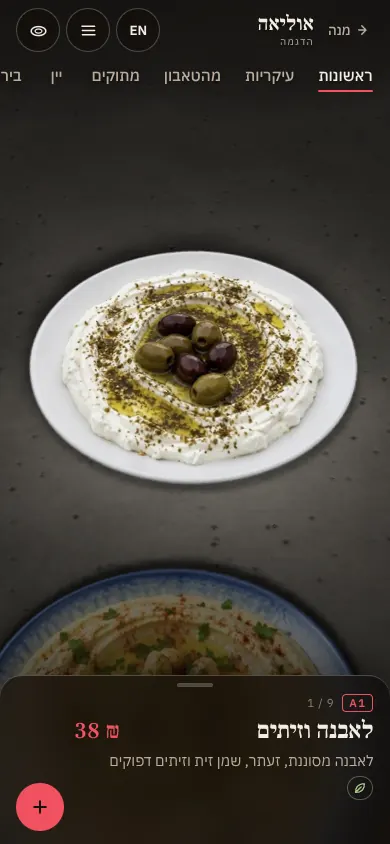
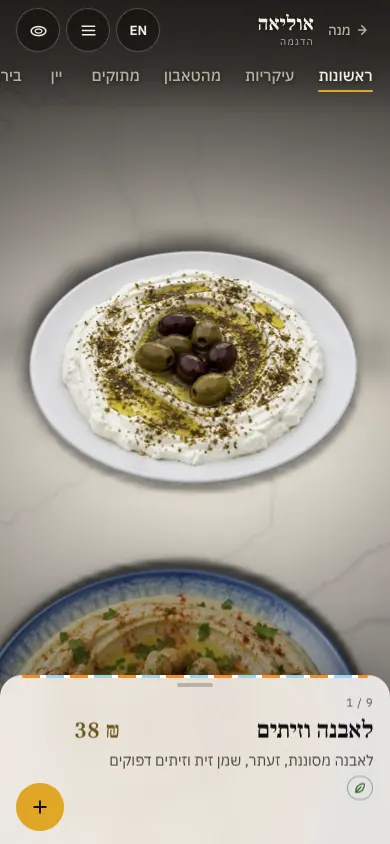
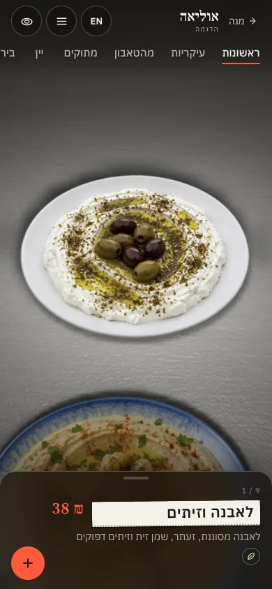
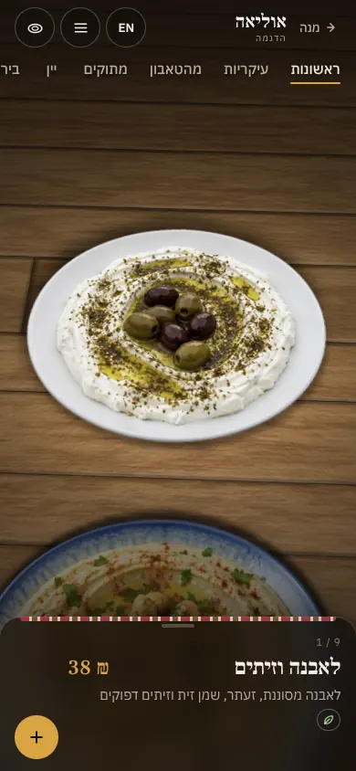
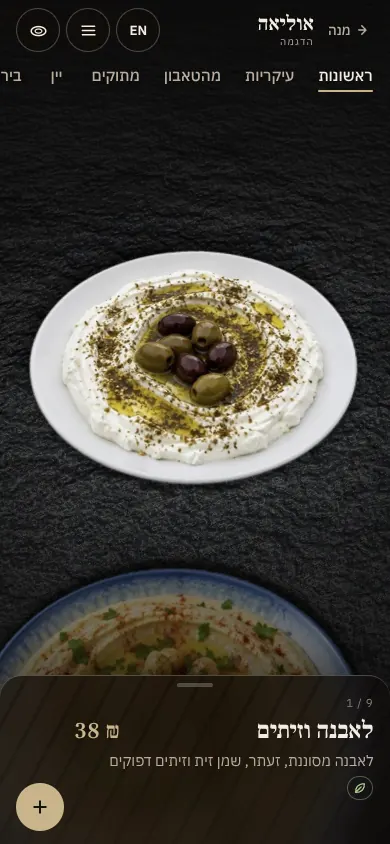

מראות Looks
שישה מראות שתפריט מנה יכול ללבוש הלילה: אותו שולחן, אותן מנות, ואור אחר. Six looks a Mana menu can wear tonight: the same table, the same dishes, another light. Every dish is still a relief from one photo.
-

בית קפה · האזנה · Café · Listening
צד א׳Album Side
בית קפה של תקליטים: בטון, נורה חמה אחת, והמנות ממוספרות כמו רצועות. A listening café: concrete, one warm bulb, the dishes numbered like tracks.
לנסות · try it -

מטבח ישראלי · אור לבנטיני · Israeli kitchen · Levantine light
לבן קזבלנקהCasablanca White
סיד, שיש מט ואור יום רחב; כרטיס בהיר עם פס אריחים דק. Whitewash, matte marble and wide daylight; a light card with a thin tile stripe.
לנסות · try it -

מטבח ישראלי · דלפק פיתות · Israeli kitchen · Pita counter
צעקה מהדלפקCounter Shout
דלפק נירוסטה, אור בהיר, והשם של המנה על פתק מהמדפסת. A steel counter, bright light, and the dish's name on a ticket from the printer.
לנסות · try it -

בר · בר מלון נסתר · Bar · Hidden hotel bar
הדלת האחוריתBack Door
בר נסתר: אגוז כהה, מנורה ענברית נמוכה מאוד, וסדק אור בראש הכרטיס. A hidden bar: dark walnut, a very low amber lamp, a crack of light at the top of the card.
לנסות · try it -

בית קפה · סלון בוהו · Café · Boho living room
סלון פשפשיםFlea Living Room
סלון של בית קפה בשוק: אלון שחוק, אור חלון של אחר הצהריים, וקצה של שטיח אדום דהוי. A flea-market café's living room: worn oak, afternoon window light, the edge of a faded red rug.
לנסות · try it -

אסייתי · אסיה־תיכוני · Asian · Asia-terranean
צל עלהLeaf Shadow
צפחה שחורה, מנורות בצורת עלה, וצל של עלה שנופל על הכרטיס. Black slate, leaf-shaped lamps, and a leaf's shadow lying across the card.
לנסות · try it
המראות נקראים כך עד שלכל אחד תהיה טקסטורה וטיפוגרפיה משלו. They are called looks until each has its own texture and type.
מנות לדוגמה · נוצרו בבינה מלאכותיתDemo dishes · made with AI